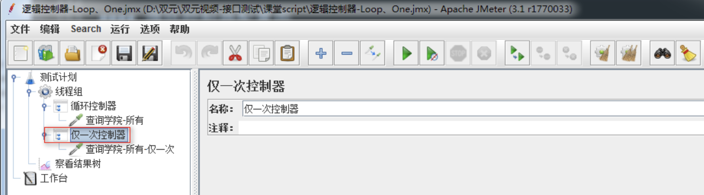
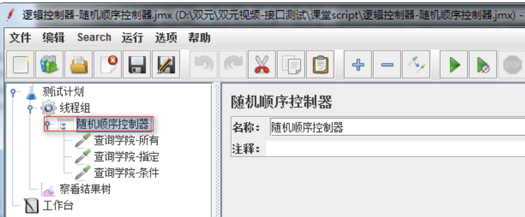
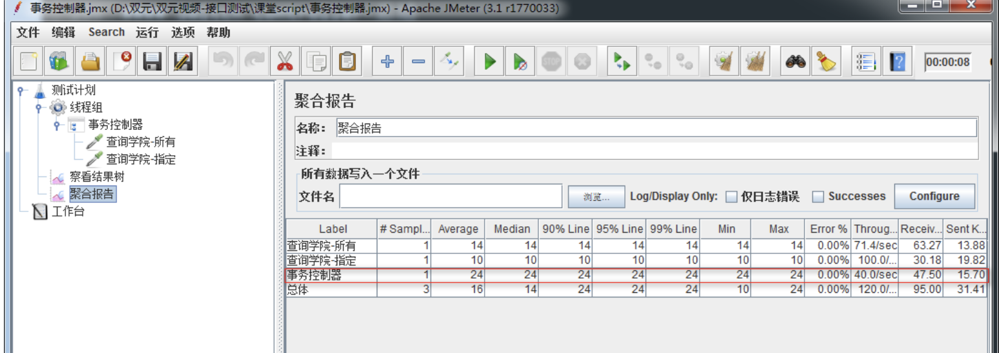

Jmeter 逻辑控制器
目标
- 了解-Jmeter中逻辑控制器
- 掌握-If Controller(IF控制器)使用
- 掌握-ForEach控制器使用
- 掌握-循环控制器
1 为什么要学习逻辑控制器？
1.1 需求
1. name=['百度','京东','淘宝']
2. name=百度,线程组执行请求百度；name=京东,线程组执行请求京东；name=淘宝,线程组执行请求淘宝;
1.2 问题
1. Jmeter目前学习的知识无法使用判断语句去控制HTTP取样器
2. 什么是逻辑控制器？
概念：Jmeter逻辑控制器是可以控制采样器(Sampler)的执行顺序，它由多个逻辑控制语句封装成不同功能的组件组成
2.1 逻辑控制器作用域
作用域：只对其子节点的sampler有效。
2.2 逻辑控制器分类
1. 控制类：控制采样器执行顺序类
2. 分组类：对采样器进行分组类
3. 常用(控制类)逻辑控制器
1. 如果（If）控制器
2. ForEach控制器
3. 交替控制器
4. 循环控制器
5. 仅一次控制器
6. 随机控制器
7. 随机顺序控制器
8. While Controller
9. Switch Controller
3.1 如果（If）控制器
作用：条件成真,则执行控制器下所有取样器
解决方案分析
1. 测试计划->线程组
1. 测试计划->用户自定义变量
2. 线程组->如果（If）控制器
3. 如果（If）控制器->HTTP请求
4. 测试计划-察看结果树
技术难点分析
如果（If）控制器 参数设置
如果（If）控制器参数配置图

1. 条件:"${name}"=="百度"
2. 注意：
1) 引用变量格式${name}需要被双引号括起来
2) 两个等号
3) 值需要被双引号括起来
如果(If)控制器-总结
1. 作用
2. 作用域
3. 条件格式
3.2 ForEach控制器
作用：ForEach控制器一般和用户定义的变量一起使用，在用户自定义变量中读取一系列相关的变量。
案例1
使用ForEach组件读取自定义变量,作为请求(查询学院-所有)的user变量值使用
操作分析
1. 测试计划->线程组
2. 线程组->用户定义的变量
3. 线程组->ForEach控制器
4. ForEach控制器->HTTP请求
5. 测试计划->察看结果树
技术难点分析
1. ForEach控制器参数设置
2. 用户定义的变量书写格式(前缀+_+数字)
ForEach控制器参数配置图

1. 输入前缀变量：输入要遍历变量前缀
2. Start index for loop(exclusive):遍历变量开始的索引(从0开始)
3. End index for loop(inclusive):遍历变量结束的索引(不包括结束索引)
4. 输出变量名称:定义要被引用的变量名称
ForEach控制器-总结
1. 作用
2. 使用ForEach读取用户定义的变量时，变量格式
3. ForEach参数设置
3.3 交替控制器
作用：交替控制，该控制器包含的所有取样器，步骤交错执行在每个循环中；
案例2
使用交替控制器,运行脚本完成2次请求：
第一次请求(查询学院-所有)和(查询学院-指定)
第二次请求(查询学院-所有)和(查询学院-id_list)
操作步骤分析
1. 测试计划->线程组
2. 线程组->HTTP请求(查询学院-所有)
3. 线程组->交替控制器
4. 交替控制器->HTTP请求(查询学院-指定)
5. 交替控制器->HTTP请求(查询学院-id_list)
交替控制器使用图

交替控制器-总结
1. 作用
2. 使用方法
3.4 循环控制器
作用：指定循环控制器内取样器的执行次数
案例3
使用循环控制器执行(查询学院-所有)接口10次
操作步骤分析
1. 测试计划->线程组
2. 线程组->循环控制器
3. 循环控制器->HTTP请求(查询学院-所有)
4. 测试计划->察看结果树
循环控制器配置图

1. 循环次数：要执行的次数
循环控制器-总结
1. 作用
3.5 仅一次控制器
作用：该控制器下取样器只执行1次；
案例4
基于案例3循环控制器中执行10次（查询学院-所有），执行1次（查询学院-指定）
操作分析
1. 循环控制器->仅一次控制器
2. 仅一次控制器->HTTP请求(查询学院-指定)
仅一次控制器使用图

仅一次控制器-总结
1. 作用
3.6 随机控制器
作用：随机执行其下的所某个请求
案例5
线程组下有3个查询学院请求[所有、指定、条件]，使用随机控制器随机执行其中1个请求
操作步骤
1. 测试计划->线程组
2. 线程组->逻辑控制器->随机控制器
3. 随机控制器->HTTP请求(查询学院-所有)
4. 随机控制器->HTTP请求(查询学院-指定)
5. 随机控制器->HTTP请求(查询学院-条件)
6. 测试计划->察看结果树
随机控制器使用图

随机控制器-总结
1. 作用
3.7 随机顺序控制器
作用：对控制器下所有采样器,随机产生1个执行顺序，进行执行
案例6
线程组下有3个查询学院请求[所有、指定、条件]，使用随机顺序控制器，随机产生一个执行顺序
操作步骤
1. 测试计划->线程组
2. 线程组->逻辑控制器->随机顺序控制器
3. 随机控制器->HTTP请求(查询学院-所有)
4. 随机控制器->HTTP请求(查询学院-指定)
5. 随机控制器->HTTP请求(查询学院-条件)
6. 测试计划->察看结果树
随机顺序控制器使用图

随机顺序控制器-总结
1. 作用
2. 随机顺序控制器与随机控制器的区别
3.8 While Controller
作用：循环执行控制器内所有采样器，直到条件为假时，停止循环
案例7
线程组下有3个查询学院请求[所有、指定、条件]，使用While控制器无限循环执行下去。
操作步骤：
1. 测试计划->线程组
2. 线程组->逻辑控制器->While Controller
3. 随机控制器->HTTP请求(查询学院-所有)
4. 随机控制器->HTTP请求(查询学院-指定)
5. 随机控制器->HTTP请求(查询学院-条件)
6. 测试计划->察看结果树
While Controller控制器使用配置图

1. 为空：最后一个请求失败，停止循环；(如果不是最后一个请求执行失败，则继续循环)
2. LAST：
1) 与为空相同之处：最后一个请求失败，停止循环；(如果不是最后一个请求执行失败，则继续循环)
2) 与为空不同之处：测试计划在执行while控制器之前如果有请求失败，则不会执行while控制器
3. 表达式：表达式为false退出循环；
例如：
1) ${VAR}:当参数VAR的值被设置成false时退出循环
2) ${__javascript(“${VAR}”==”User1”)}:当参数VAR的值部位User1时退出循环
While Controller-总结
1. 作用
2. 取值为空和LAST区别;
3.9 Switch Controller控制器
作用：通过给该控制器中的value赋值，来指定运行哪个取样器;
案例8
线程组下有3个查询学院请求[所有、指定、条件]，使用Switch控制器控制执行指定请求。
操作步骤：
1. 测试计划->线程组
2. 线程组->逻辑控制器->Switch Controller
3. 随机控制器->HTTP请求(查询学院-所有)
4. 随机控制器->HTTP请求(查询学院-指定)
5. 随机控制器->HTTP请求(查询学院-条件)
6. 测试计划->察看结果树
Switch Controller控制器配置图

1. Switch Value：为采样器名称；执行采样器名称相应的请求
2. Switch Value：为空；默认为执行第一个
3. Switch Value：为索引；第一个为0
Switch Controller-总结
1. 作用
2. 取值
4. 常用(分组类)
1. 简单控制器
2. 事务控制器
4.1 简单控制器
作用：只做分组使用，犹如打隔断；
备注：
添加简单控制器修改(查询学院)，把(查询学院-所有、查询学院-指定)接口存放到此控制器下
简单控制器使用图

4.2 事务控制器
作用：生成一个额外的采样器来测量其下测试元素的总体时间；
值得注意的是，这个时间包含该控制器范围内的所有处理时间，而不仅仅是采样器的;
操作步骤分析
1. 测试计划->线程组
2. 线程组->逻辑控制器->事务控制器
3. 事务控制器->HTPP请求(查询所有、查询指定)
4. 测试计划->监听器->聚合报告
事务控制器使用图

事务控制器-总结：
1. 概念
2. 如何查看事务取样时间
5. 逻辑控制器-总结
1. 如果（If）控制器
2. ForEach控制器
3. 交替控制器
4. 循环控制器
5. 仅一次控制器
6. 随机控制器
7. 随机顺序控制器
8. While Controller
9. Switch Controller